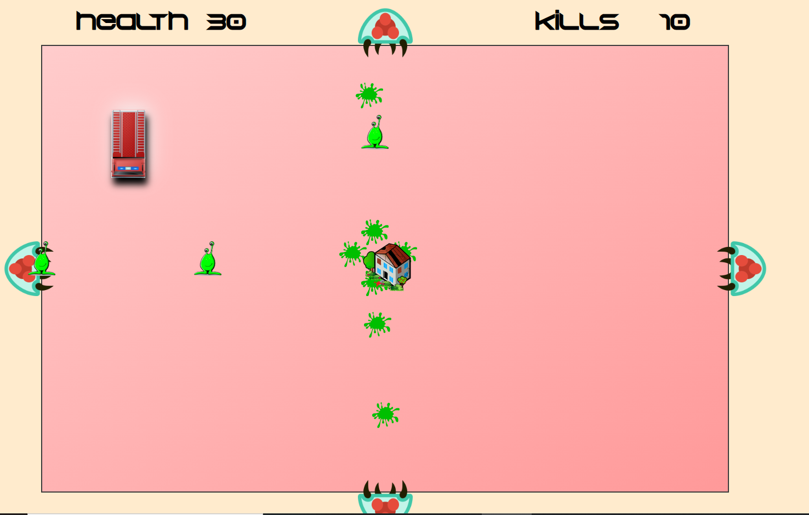
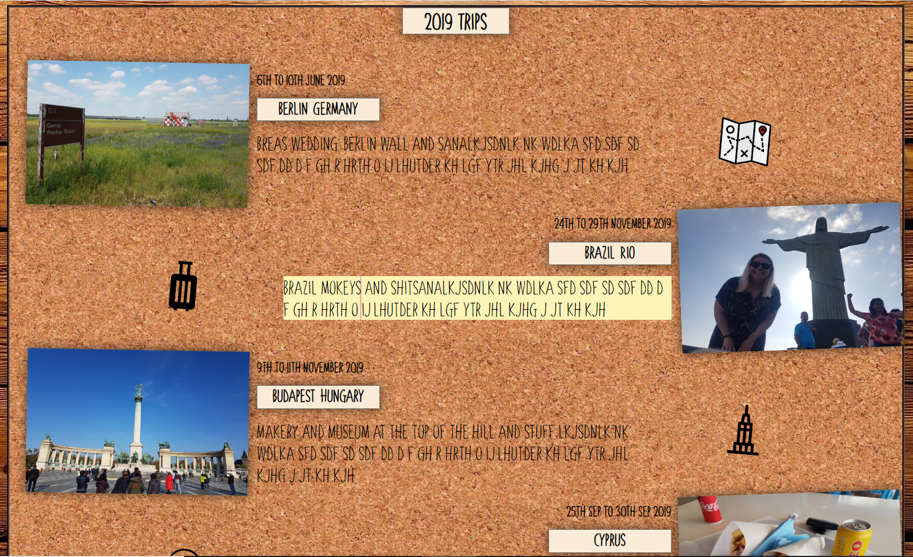
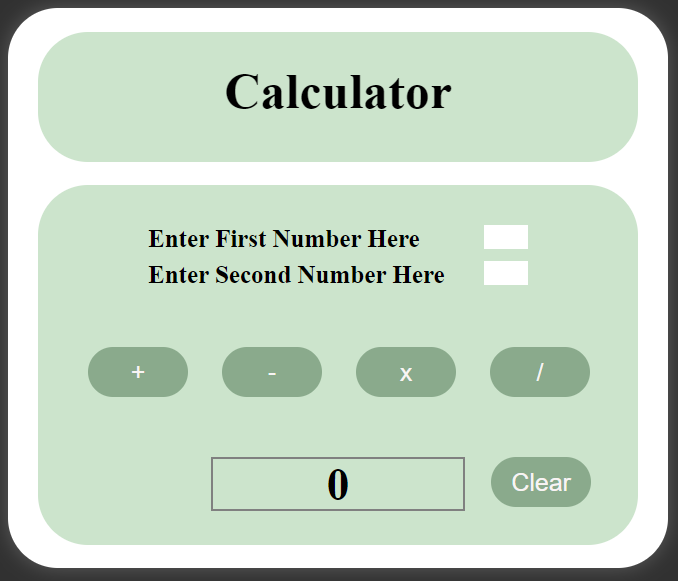
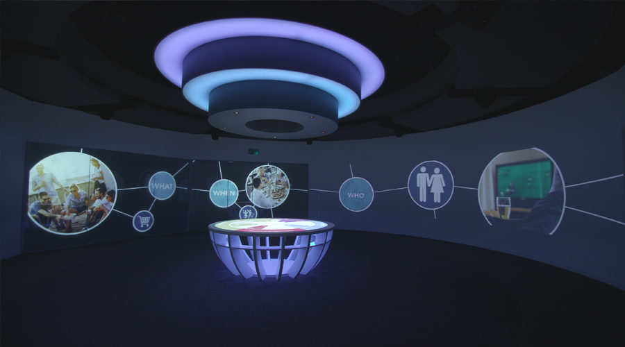

Hi!
I recently moved back to Auckland from 10 years living in London, UK. I'm currently working for Auckland Live as an Audio Visual Technician. Most of my life I have worked with the technology that is used in the live events industry. In my spare time I love to play music, snowboard, play PC games, fishing and socializing with friends and family
I am currently working towards a career change to hopefully become a web developer. I have been coding as a hobby since 2020 and I am working on a coding bootcamp with AUT/ Institute of Data this year
Personal Hobbies
Travel

Me and my wife Kylie in Cairo - 2014
I love to travel and see the world with my wife Kylie. We based ourselves in London between 2013 - 2022 and we travelled in this time to over 40 countries
Music

Playing bass in my auckland based metal band "Just One Fix"
I spend a lot of time at home playing my electric guitar and bass. I have played in a few bands in Auckland / London and nothing beats the thrill of playing music live (If people actually show up to our gigs!)
Gaming

PC gamer setup - Not mine!
I have been playing PC games since I was very young. My earliest memory gaming was playing "Alex the Kid" on Sega Mastersystem. My love of gaming has tought me a lot about how to build and configuer PC's
Fishing

Catching snapper on my boat in the Thames - 2016
I love going out fishing on my boat. usually my wife catches larger fish than me which she loves to remind people from time to time :)
My Coding Experience
Browser Game
Screen shot of the game
Browser based top down game that I created by myself "Squish the alien" This was a personal project I worked on in 2020 to teach myself HTML, CSS and lots of Javascript!
Photo Album
Screen shot of my 2019 trips page
Browser photo album to showcase my travel photography. This was a personal project I worked on in 2020 to teach myself HTML, CSS and basic Javascript)
Online form

Screenshot of my form
Online form i created during the IOD bootcamp. This was to build confidence in creating HTML forms and validation)
Online calculator
Screenshot of my calculator
Online calculator i created during the IOD bootcamp. This was to build confidence in javascript functions)
Work history
Auckland Live

Civic Theater - Auckland Live Venue
I started working at Auckland Live in May 2022 when I moved back to New Zealand. My position is "Event technician" and my responsibilities are; setting up & operating large scale Audio Visual systems for live events
JB Communications
Diageo Customer Collaboration Center - Built and managed by JB Communications
I worked at JB Communications for the entire time I was living in London from 2014 to 2022. It was a diverse role that included working on live events and also building permanent installations. I was also responsible for aftercare and maintenance of the installations. This was a client facing role that was 50% office based for organisational tasks and 50% onsite work leading the team
Staging Connections
Awards Show / Gala Dinner
I worked at Staging connections for 2010 - 2013. My position was "Event Technician" and my responsibilities included setting up large corporate event technology such as PA systems, large format projection, lighting systems. I worked my way up to becoming a senior technician in this role. I left this role to move to London
Vidcom
Vidcom Logo
I worked at vidcom from 2007 - 2010. This was my first job in the Corporate AV insustry ans I was hired as a AV technicain. My role included setting up and operating various Audio Visual systems. Usually this was for conferences and usually limited to basic PA systems, Projectors and lighting
NZ Army
Automotive Technician - NZ Army
I was in the NZ army from 2006 to 2007 and I joined as a Automotive Technician. I made it through basic training, branch training and half way through my apprentiship but I left due to not loving the my trade